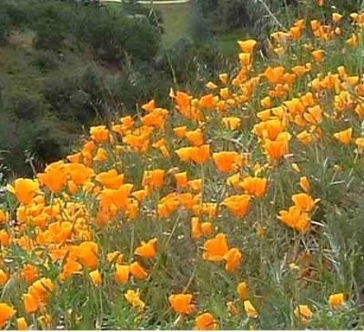
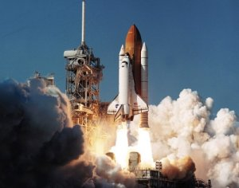

The Guild meets the second Tuesday of every month in the facilities of Quartz Hill Community Church on the corner of 51st Street West and Avenue K.
Each year, the Guild, together with Quartz Hill School of Theology sponsors the Antelope Valley Christian Writers Conference.
Next year's conference will be held on May 20-21, 2011. For information, visit the website:
As Christians, we know that God gives different gifts to different people. For some, they feel called to preach. For others, they travel far and wide as missionaries. Some serve God with music, others with gifts of bookkeeping or teaching or administration. We may have different roles, but we all share the same mission to serve God and his people.
Clearly, we writers are a unique breed. For us, the Lord has given us the special gift of putting pen to paper to share a message. We have a passion to take a simple story and build it into a finished product that will inspire others. For some it may be a lucrative full-time career. For others, it’s a rewarding pastime. But wherever you come from – and wherever you want to go – we are all motivated by the simple joy of telling a story.
We can help you get there.
At the High Desert Christian Writers Guild, you will have the opportunity to interact with both professional writers and beginning writers who share your calling – your zeal – and perhaps your frustrations as well. You can trade ideas, share experiences, have your writing critiqued, and support one another in prayer. Together, we can help you take your writing to the next level, the best it can be. We discuss such things as:
How should a Christian approach his writing?
What’s keeping you from getting published?
How can you improve your writing skills?
What do editors and publishers look for, when evaluating a manuscript?
We hope you will seize this opportunity to gain fresh inspiration for your writing, and perhaps a little encouragement for yourself as well.
See you there!
 For those unfamiliar with the area, the Antelope Valley is a desert community at the northeastern edge of Los Angeles County. Its two main cities, Lancaster and Palmdale, are among the fastest growing cities in the state of California. Wildflowers abound every spring, with California Poppies (the official state flower) appearing on just about every hillside.
The area has a rich heritage with the aerospace industry. Several major manufacturers have facilities here, and the space shuttles were assembled here. Edwards Air Force Base is nearby, the site of Chuck Yeager’s historic flight where he broke the sound barrier in a Bell X-1, in 1947. The Tom Hanks movie, The Terminal, was produced here at Palmdale Regional Airport.